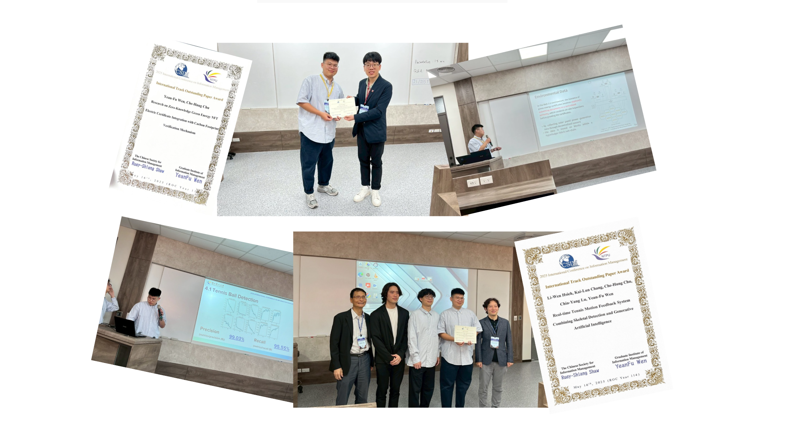
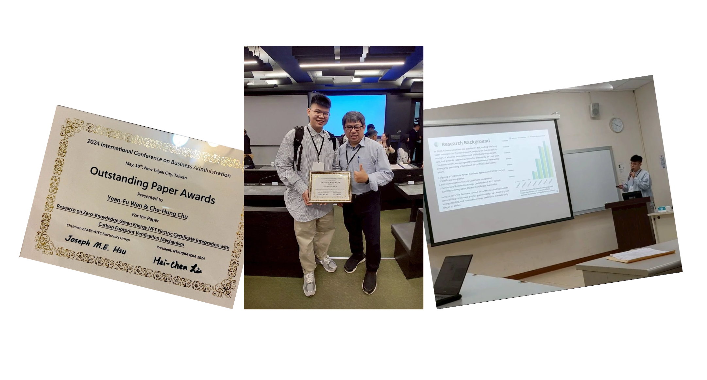
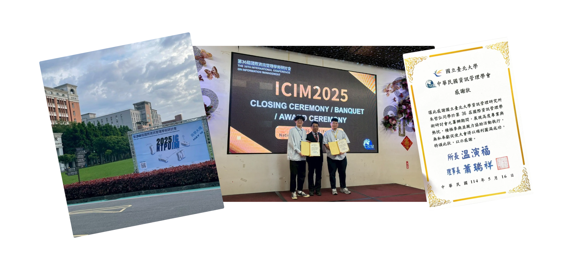
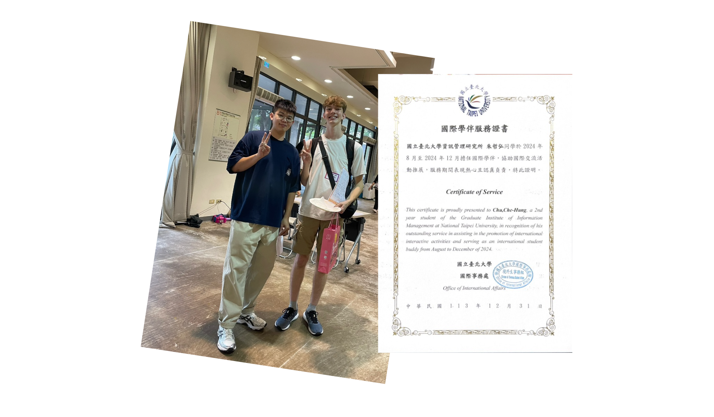
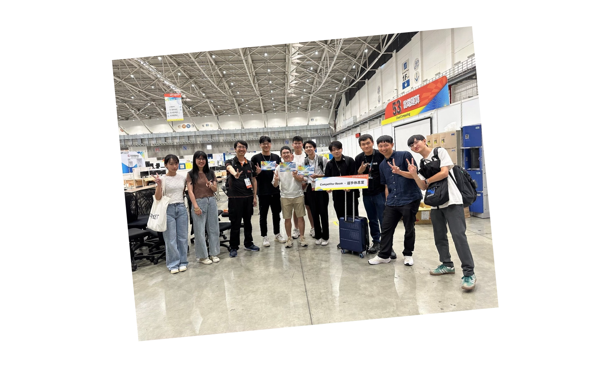

｜Outstanding Paper Award｜

｜Outstanding Paper Award｜

團隊溝通與獨立思考：
在研討會籌備期間，需統整來自不同老師與單位的意見，反覆溝通與理解背景脈絡，進行滾動式調整與整合。在此過程中，我不僅扮演資訊傳遞與回覆 email 的窗口角色，更在有限時間與資源下，培養獨立思考與判斷優先順序的能力，協助團隊在共識中推進執行進度。
建置研討會網站：
我負責研討會網站的建置，從資訊架構、操作流程到介面呈現，皆以使用者角度出發，規劃清楚、直覺且易於操作的系統介面，提升整體使用體驗。同時，參與海報主視覺與文案設計，使我能將抽象的學術活動轉化為具辨識度且一致性的視覺與文字訊息，強化研討會對外溝通的完整度與專業形象。

主動交流與問題解決：
我配對到的是一名來自美國的學生，在學生適應新環境時提供即時協助。面對生活不便或學習制度不熟悉等問題，我必須主動傾聽對方需求，並以清楚、有耐心的方式說明與協助，培養了我在交流中快速判斷與解決問題的能力。
代表學校的責任感：
作為國際學伴，我意識到自己不僅代表個人，也在某種程度上代表學校。無論是在行程安排、文化介紹或日常互動中，我都更加謹慎與用心，希望能讓對方留下正面且深刻的印象，培養自己的使命感。

即時支援與突發應對：
在競賽進行期間，我以參賽者角度出發，理解其在高度壓力與時間限制下對穩定環境的需求，主動關注考試過程中的異常狀況。面對設備操作、系統登入或流程不熟悉等突發問題，我即時提供協助與引導。透過這段經驗，我體會到同理心不僅是理解他人感受，更是能在關鍵時刻提供幫助，確保他們在競賽過程中順利。
